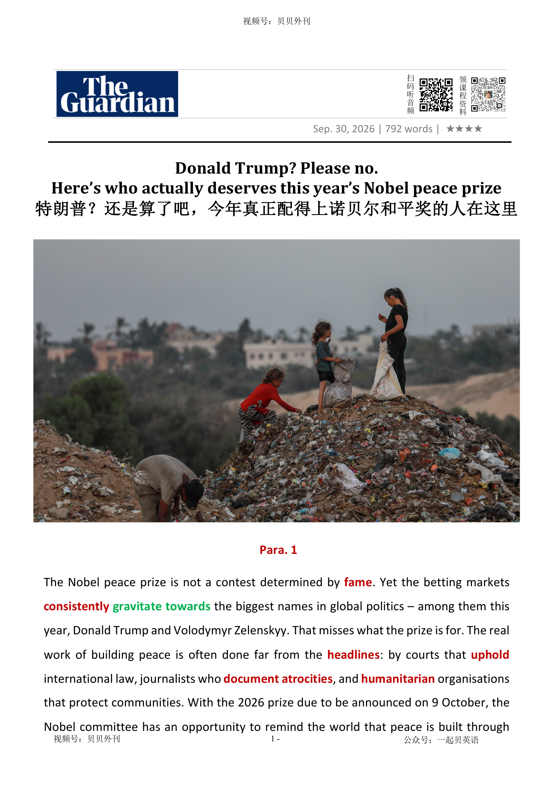

02 HEADLINE / 标题中英文解释
Donald Trump? Please no. Here’s who actually deserves this year’s Nobel peace prize
特朗普？还是算了吧，今年真正配得上诺贝尔和平奖的人在这里

Donald Trump? Please no. Here’s who actually deserves this year’s Nobel peace prize
特朗普？还是算了吧，今年真正配得上诺贝尔和平奖的人在这里
文章讨论 2026 年诺贝尔和平奖的可能归属，并批评押注市场过度追捧特朗普、泽连斯基等政治名人，忽视了真正建设和平的制度和组织。
开头指出，诺贝尔和平奖不是名气竞赛。
特朗普不符合奖项精神，因为他的政治风格更接近强人交易和破坏国际规则；泽连斯基虽领导乌克兰抵抗侵略，但把和平奖授予正在交战一方的国家领导人，可能被视为对战争一方的背书，不符合诺贝尔强调裁军、国际友爱和和平大会的传统。
文章随后转向更值得关注的候选者：救助战区儿童的组织、国际法院和国际刑事法院、战地记者、人道主义团体，以及国际空间站合作项目。
中段说明当下背景：全球武装冲突数量创历史新高，从乌克兰、加沙、苏丹到缅甸、刚果、萨赫勒地区，平民承受巨大伤亡和流离失所。
在这种时代，和平奖更应该奖励那些维护规则、记录罪行、救助平民、追究责任的人，而不是只关注曝光度最高的政治人物。
文章逐一分析几类和平建设者：国际法院和国际刑事法院维护国际法权威，即使强国不愿服从；战地记者冒死保存证据，防止暴行被抹去；人道组织在战火中照护儿童和平民；国际空间站则证明，即使地缘政治紧张，敌对阵营也能在共同规则下持续合作。
结尾提出全文主旨：和平不是某个领袖个人成就，而是人类共同构建的制度、规则、司法、合作与记忆。
诺贝尔委员会应把目光从显赫人物身上移开，转向那些默默支撑和平基础的人。
The article is about the Nobel Peace Prize and who should win it in 2026. Betting markets are interested in famous political names such as Donald Trump and Volodymyr Zelenskyy.
But the writer says the prize should not be a fame contest. It should reward real peace-building work.
The article argues that Trump is not a good choice because his politics often weaken rules and institutions. Zelenskyy is also unlikely to win, even though he has led Ukraine during Russia’s invasion.
Giving the prize to a leader of one side in an active war could look like support for that side, not a prize for peace. The writer says the committee should look at less famous candidates.
These include organisations that help children in war zones, international courts, journalists, humanitarian groups and the International Space Station partnership. The world has many armed conflicts today, from Ukraine and Gaza to Sudan, Myanmar, Congo and the Sahel.
This makes peace-building work even more important. International courts help protect international law and hold people responsible for war crimes.
Journalists in war zones record evidence so that crimes cannot be erased from history. Humanitarian organisations help children and civilians when governments fail to protect them.
The International Space Station shows that countries can cooperate peacefully even when politics on Earth are tense. The main message is that peace is not created by fame or speeches.
It is built through cooperation, rules, courts, humanitarian work and honest reporting. The Nobel committee has a chance to make people notice these tools of peace.
In a violent time, the prize should honour quiet workers who protect peace every day.
诺贝尔和平奖评选误区（Para 1-3） ├─ 市场偏好：赌市追捧知名政治人物 ├─ 否定理由：特朗普不符合和平奖标准 └─ 否决逻辑：泽连斯基获奖易偏袒交战一方 候选名单与时代背景（Para 4-6） ├─ 热门备选：儿童救助组织、国际法院等 ├─ 严峻现状：全球武装冲突数量创历史新高 └─ 核心观点：战乱越多，和平奖价值越凸显 值得表彰的和平建设者（Para 7-10） ├─ 国际司法：两大法院维护国际法权威 ├─ 战地记者：记录暴行，追责战争罪行 ├─ 人道团体：救助战区平民与儿童 └─ 太空合作：国际空间站诠释跨敌对阵营协作 和平的真正内涵（Para 11） ├─ 和平本质：依靠制度、人道规则与合作构建 ├─ 呼吁方向：委员会避开名人，选择实干者 └─ 文末主旨：肯定默默无闻的和平建设工作
The Nobel peace prize is not a contest determined by fame声誉. Yet the betting markets consistently gravitate受吸引 towards the biggest names in global politics – among them this year, Donald Trump and Volodymyr Zelenskyy. That misses what the prize is for. The real work of building peace is often done far from the headlines标题: by courts that uphold维护 international law, journalists who document记录 atrocities暴行, and humanitarian人道主义的 organisations that protect communities. With the 2026 prize due to be announced on 9 October, the Nobel committee has an opportunity to remind the world that peace is built through institutions习俗 and cooperation, not just diplomatic外交的 grandstanding作秀.
诺贝尔和平奖从来不是一场靠知名度决胜的比赛。然而，博彩市场却总是习惯性地把目光投向全球政坛最耀眼的人物,今年的热门人选中，就包括特朗普和泽连斯基。但这恰恰偏离了这一奖项的初衷。真正缔造和平的工作，往往发生在头条报道覆盖不到的地方：是那些捍卫国际法的法院，是那些记录暴行的记者，是那些守护民众的人道主义组织。2026年诺贝尔和平奖将于10月9日揭晓，诺贝尔委员会得以借此机会提醒世界：和平建立于制度与合作之上，而不仅仅是外交舞台上的高调姿态。
Despite the favourable有利的 odds投, Trump will遗嘱 not win. A sitting现任的 president waging开始 a war against Iran is an impossible candidate for a prize intended to advance peace. Whatever Trump’s diplomatic efforts elsewhere, the Nobel committee will consider the totality全体 of a candidate’s contribution – a record that now includes allegations说法 of US war crimes.
虽然赔率看好，但特朗普不会获奖。一位在任总统，同时又对伊朗发动战争，这样的人几乎不可能成为一个旨在推动和平的奖项得主。无论特朗普在其他外交事务上取得过怎样的成果，诺贝尔委员会考量的都会是候选人贡献的整体面貌。而这份履历，如今已经包含针对美国战争罪行的相关指控。
The Ukrainian president is also unlikely to win. Awarding the Nobel peace prize to the serving在任的 commander-in-chief总司令 of a country fighting a major war would risk turning the prize into an endorsement赞同 of one side in the conflict, regardless of Ukraine’s right to defend itself. It would also sit uneasily with Alfred Nobel’s will, which called for efforts to promote “fraternity同业者 between nations”, reduce standing长期存在的 armies and advance peace.
乌克兰总统同样不太可能获奖。将诺贝尔和平奖授予一个正身处重大战争中的国家现任三军统帅，无异于让奖项被视为对冲突一方的背书——即便乌克兰拥有自卫的正当权利。这样的决定，也会与阿尔弗雷德·诺贝尔的遗愿相悖。诺贝尔曾呼吁，和平奖应授予那些推动“各国之间友爱”、削减常备军并促进和平事业的人。
Look past忽略 the headline-grabbing如果把目光从那些吸引眼球的大人物身上… names, and Save the Children, Sudan’s Emergency Response Rooms and the international court of justice all feature起重要作用 near the top of Polymarket’s rankings, with a current combined 28% chance of winning. On these candidates, the markets may well be closer to calling the result. But they are also missing several of the world’s most deserving peace-builders.
如果把目光从那些吸引眼球的大人物身上移开，就会发现“拯救儿童基金会”、苏丹“紧急响应室”以及国际法院等机构都位居博彩平台 Polymarket 榜单前列，三者合计拥有28%的获奖概率。在这些候选人身上，市场或许比在政治明星身上更接近真实答案。但即便如此，它们仍然忽略了世界上一些最值得被表彰的和平建设者。
As head of the Peace Research Institute Oslo, an independent body团体 that conducts组织 research on the conditions for peaceful relations between nations, groups and individuals, I am regularly asked whether the prize should be awarded at all, given the scale of conflict today. The wars in Ukraine and Sudan continue to exact要求 a massive human toll毁坏, while the war involving Iran has added another dangerous front前线 to an unstable international landscape局面. Our latest conflict trends report recorded 65 state-based armed conflicts in 2025 – the highest number since records began in 1946.
作为奥斯陆和平研究所负责人,我们是一家独立研究机构，专门研究国家、群体和个人之间实现和平关系的条件。我经常被问到：在当今冲突如此频繁的时代，诺贝尔和平奖是否还有意义？乌克兰和苏丹的战争仍在持续吞噬生命，而涉及伊朗的战争又为本已动荡不安的国际局势增添了新的危险战线。根据我们最新发布的冲突趋势报告，2025年全球共发生65场国家层面的武装冲突，创下1946年有记录以来的最高水平。
Such a backdrop背景 only strengthens my belief that the more war there is, the more the Nobel peace prize matters. There is no shortage of worthy people and organisations the prize should honour. Each year, I publish a list of candidates I believe deserve the prize. Several who have featured on past lists have subsequently随后 become Nobel laureates荣誉获得者.
然而，正是在这样的背景下，我愈发坚信：战争越频繁，诺贝尔和平奖就越重要。世界从不缺少值得获奖的人和组织。每年，我都会公布一份我认为配得上和平奖的候选名单。过去几年中，名单上的多位人选后来都真的成为了诺贝尔和平奖得主。
This year, my list includes the international court of justice and the international criminal court (ICC). Rules matter only if they can be enforced强制执行, and these courts uphold a principle increasingly under pressure: that international law applies even to the powerful. At a time when the US administration is placing sanctions制裁 on ICC officials, awarding the courts the prize would affirm肯定属实 the importance of the international legal order.
今年，我的名单中包括国际法院（ICJ）和国际刑事法院（ICC）。规则只有在能够被执行时才有意义，而这两家法院所维护的，正是一项日益受到冲击的原则：国际法同样适用于位高权重者。在美国政府对国际刑事法院官员实施制裁的当下，将和平奖授予这些国际司法机构，无疑将是对国际法治秩序重要性的有力肯定。
International law also depends on knowing when it has been broken. Journalists provide the evidence, often at enormous personal risk. The Committee to Protect Journalists (CPJ) recorded 132 journalists and media workers killed in 2025, the deadliest year in its records. It attributed two-thirds of those deaths to Israel. Protecting journalism protects our ability to establish what happens in war – essential for accountability问责 and peace. The CPJ would be a fitting适合的 laureate.
而国际法的运作，同样依赖于人们知道它何时被践踏。记者们承担着这一职责，并常常为此付出巨大代价。保护记者委员会（CPJ）的数据显示，2025年共有132名记者和媒体工作者遇害，成为该机构有记录以来最血腥的一年。其中约三分之二的死亡案例被归因于以色列方面。保护新闻事业，就是保护人类查明战争真相的能力；而真相，是问责机制与持久和平不可或缺的基础。因此，保护记者委员会完全配得上成为和平奖得主。
Protecting civilians, particularly children, is another fundamental十分重大的 task. Save the Children works globally to prevent and respond to grave严重的 violations违反 against children in conflict. In Ukraine, Mykola Kuleba’s Save Ukraine has returned more than 1,700 children from Russia and occupied territories领土. In Sudan, the Emergency Response Rooms have built community-led networks providing food, medical care and other lifesaving救命的 services amid war.
保护平民，尤其是保护儿童，同样是一项至关重要的使命。拯救儿童基金会长期在全球范围内致力于预防和应对战争中针对儿童的严重侵害行为。在乌克兰，由米科拉·库列巴创立的“拯救乌克兰”组织已经帮助1700多名儿童从俄罗斯及其占领地区返回家园。而在苏丹，“紧急响应室”则建立起由社区主导的互助网络，在战火中持续提供食物、医疗救助以及其他挽救生命的服务。
International cooperation creates predictability and reduces the risk of conflict. The International Space Station (ISS) is an extraordinary example: for more than 25 years, geopolitical rivals have sustained维持 a peaceful scientific partnership even as relations on Earth have deteriorated变坏. As the ISS approaches decommissioning停止使用 and space becomes more crowded, commercialised利用…牟利 and weaponised武器化, a Nobel peace prize for the partnership would celebrate what sustained cooperation can achieve – and underscore突出显示 the continuing importance of keeping space governed by common rules and peaceful collaboration.
国际合作能够创造稳定预期，并降低冲突爆发的风险。国际空间站（ISS）正是这一点最非凡的例证。二十五年来，即便地球上的政治关系不断恶化，地缘政治竞争对手们依然维系着这一和平而持久的科学合作项目。如今，随着国际空间站逐步走向退役，太空正变得愈发拥挤、商业化，也日益军事化。如果将诺贝尔和平奖授予这一合作伙伴关系，不仅是在赞颂长期合作所取得的伟大成就，更是在提醒世人：让太空继续受共同规则约束，并保持和平合作，依然至关重要。
Peace is something we construct: it is achieved through cooperation that reduces uncertainty, humanitarian rules that restrain制止 cruelty残酷, courts that impose consequences and journalists who ensure violations cannot simply be erased清除. The Nobel committee has an opportunity to turn the world’s attention towards some of the essential tools for securing international peace. In a world breaking records for conflict, it should look past the big names and bet on those doing the painstaking需细心的 work of building peace.
和平是一项需要人类不断建设的事业。它来自减少不稳定的合作机制，来自约束残酷行为的人道主义准则，来自能够追究责任的司法体系，也来自那些确保罪行不会被历史抹去的记者。如今，诺贝尔委员会拥有一个机会：让世界重新关注那些维护国际和平不可或缺的工具。在一个不断刷新冲突纪录的时代，他们应当把目光从那些声名显赫的人物身上移开，转而关注那些默默无闻、却日复一日从事艰苦和平建设工作的人们。
声誉
If you achieve fame, you become very well-known.
At the height of his fame, his every word was valued. 在他声名鼎盛时，他的每一句话都受到了重视。
The Nobel peace prize is not a contest determined by fame.
诺贝尔和平奖从来不是一场靠知名度决胜的比赛。然而，博彩市场却总是习惯性地把目光投向全球政坛最耀眼的人物,今年的热门人选中，就包括特朗普和泽连斯基。但这恰恰偏离了这一奖项的初衷。真正缔造和平的工作，往往发生在头条报道覆盖不到的地方：是那些捍卫国际法的法院，是那些记录暴行的记者，是那些守护民众的人道主义组织。2026年诺贝尔和平奖将于10月9日揭晓，诺贝尔委员会得以借此机会提醒世界：和平建立于制度与合作之上，而不仅仅是外交舞台上的高调姿态。
一致的；始终如一的
always behaving in the same way, or having the same opinions, standards, etc.
We must be consistent in applying the rules.我们在实施这些规则时必须保持一致。
受吸引
If you gravitate toward a particular place, thing, person, or activity, you are attracted by it and go to it or get involved in it.
You naturally gravitate toward people with shared values. 你自然而然地被具有共同价值观的人吸引。
Yet the betting markets consistently gravitate towards the biggest names in global politics – among them this year, Donald Trump and Volodymyr Zelenskyy.
诺贝尔和平奖从来不是一场靠知名度决胜的比赛。然而，博彩市场却总是习惯性地把目光投向全球政坛最耀眼的人物,今年的热门人选中，就包括特朗普和泽连斯基。但这恰恰偏离了这一奖项的初衷。真正缔造和平的工作，往往发生在头条报道覆盖不到的地方：是那些捍卫国际法的法院，是那些记录暴行的记者，是那些守护民众的人道主义组织。2026年诺贝尔和平奖将于10月9日揭晓，诺贝尔委员会得以借此机会提醒世界：和平建立于制度与合作之上，而不仅仅是外交舞台上的高调姿态。
标题；头条新闻
the title of a newspaper article or news report; the most important or attention-grabbing piece of news
The story made headlines around the world. 这则新闻登上了世界各地的头条。
The real work of building peace is often done far from the headlines: by courts that uphold international law, journalists who document atrocities, and humanitarian organisations that protect communities.
诺贝尔和平奖从来不是一场靠知名度决胜的比赛。然而，博彩市场却总是习惯性地把目光投向全球政坛最耀眼的人物,今年的热门人选中，就包括特朗普和泽连斯基。但这恰恰偏离了这一奖项的初衷。真正缔造和平的工作，往往发生在头条报道覆盖不到的地方：是那些捍卫国际法的法院，是那些记录暴行的记者，是那些守护民众的人道主义组织。2026年诺贝尔和平奖将于10月9日揭晓，诺贝尔委员会得以借此机会提醒世界：和平建立于制度与合作之上，而不仅仅是外交舞台上的高调姿态。
维护
If you uphold something such as a law, a principle, or a decision, you support and maintain it.
Our policy has been to uphold the law. 我们的政策一直是维护法律。
The real work of building peace is often done far from the headlines: by courts that uphold international law, journalists who document atrocities, and humanitarian organisations that protect communities.
诺贝尔和平奖从来不是一场靠知名度决胜的比赛。然而，博彩市场却总是习惯性地把目光投向全球政坛最耀眼的人物,今年的热门人选中，就包括特朗普和泽连斯基。但这恰恰偏离了这一奖项的初衷。真正缔造和平的工作，往往发生在头条报道覆盖不到的地方：是那些捍卫国际法的法院，是那些记录暴行的记者，是那些守护民众的人道主义组织。2026年诺贝尔和平奖将于10月9日揭晓，诺贝尔委员会得以借此机会提醒世界：和平建立于制度与合作之上，而不仅仅是外交舞台上的高调姿态。
记录，记载（详情）
to record the details of sth
Causes of the disease have been well documented.这种疾病的起因已有完备的记载。
The real work of building peace is often done far from the headlines: by courts that uphold international law, journalists who document atrocities, and humanitarian organisations that protect communities.
诺贝尔和平奖从来不是一场靠知名度决胜的比赛。然而，博彩市场却总是习惯性地把目光投向全球政坛最耀眼的人物,今年的热门人选中，就包括特朗普和泽连斯基。但这恰恰偏离了这一奖项的初衷。真正缔造和平的工作，往往发生在头条报道覆盖不到的地方：是那些捍卫国际法的法院，是那些记录暴行的记者，是那些守护民众的人道主义组织。2026年诺贝尔和平奖将于10月9日揭晓，诺贝尔委员会得以借此机会提醒世界：和平建立于制度与合作之上，而不仅仅是外交舞台上的高调姿态。
暴行
An atrocity is a very cruel, shocking action.
The killing was cold-blooded, and those who committed this atrocity should be tried and punished.
The real work of building peace is often done far from the headlines: by courts that uphold international law, journalists who document atrocities, and humanitarian organisations that protect communities.
诺贝尔和平奖从来不是一场靠知名度决胜的比赛。然而，博彩市场却总是习惯性地把目光投向全球政坛最耀眼的人物,今年的热门人选中，就包括特朗普和泽连斯基。但这恰恰偏离了这一奖项的初衷。真正缔造和平的工作，往往发生在头条报道覆盖不到的地方：是那些捍卫国际法的法院，是那些记录暴行的记者，是那些守护民众的人道主义组织。2026年诺贝尔和平奖将于10月9日揭晓，诺贝尔委员会得以借此机会提醒世界：和平建立于制度与合作之上，而不仅仅是外交舞台上的高调姿态。
人道主义的（主张减轻人类苦难、改善人类生活）；慈善的
concerned with reducing suffering and improving the conditions that people live in
to provide humanitarian aid to the war zone给战区提供人道主义援助
The real work of building peace is often done far from the headlines: by courts that uphold international law, journalists who document atrocities, and humanitarian organisations that protect communities.
诺贝尔和平奖从来不是一场靠知名度决胜的比赛。然而，博彩市场却总是习惯性地把目光投向全球政坛最耀眼的人物,今年的热门人选中，就包括特朗普和泽连斯基。但这恰恰偏离了这一奖项的初衷。真正缔造和平的工作，往往发生在头条报道覆盖不到的地方：是那些捍卫国际法的法院，是那些记录暴行的记者，是那些守护民众的人道主义组织。2026年诺贝尔和平奖将于10月9日揭晓，诺贝尔委员会得以借此机会提醒世界：和平建立于制度与合作之上，而不仅仅是外交舞台上的高调姿态。
习俗; 制度
An institution is a custom or system that is considered an important or typical feature of a particular society or group, usually because it has existed for a long time.
I believe in the institution of marriage. 我相信婚姻制度。
With the 2026 prize due to be announced on 9 October, the Nobel committee has an opportunity to remind the world that peace is built through institutions and cooperation, not just diplomatic grandstanding.
诺贝尔和平奖从来不是一场靠知名度决胜的比赛。然而，博彩市场却总是习惯性地把目光投向全球政坛最耀眼的人物,今年的热门人选中，就包括特朗普和泽连斯基。但这恰恰偏离了这一奖项的初衷。真正缔造和平的工作，往往发生在头条报道覆盖不到的地方：是那些捍卫国际法的法院，是那些记录暴行的记者，是那些守护民众的人道主义组织。2026年诺贝尔和平奖将于10月9日揭晓，诺贝尔委员会得以借此机会提醒世界：和平建立于制度与合作之上，而不仅仅是外交舞台上的高调姿态。
外交的；从事外交的
connected with managing relations between countries (= diplomacy )
a diplomatic crisis外交危机
With the 2026 prize due to be announced on 9 October, the Nobel committee has an opportunity to remind the world that peace is built through institutions and cooperation, not just diplomatic grandstanding.
诺贝尔和平奖从来不是一场靠知名度决胜的比赛。然而，博彩市场却总是习惯性地把目光投向全球政坛最耀眼的人物,今年的热门人选中，就包括特朗普和泽连斯基。但这恰恰偏离了这一奖项的初衷。真正缔造和平的工作，往往发生在头条报道覆盖不到的地方：是那些捍卫国际法的法院，是那些记录暴行的记者，是那些守护民众的人道主义组织。2026年诺贝尔和平奖将于10月9日揭晓，诺贝尔委员会得以借此机会提醒世界：和平建立于制度与合作之上，而不仅仅是外交舞台上的高调姿态。
作秀；哗众取宠；出风头
behaviour intended to attract attention, gain approval, or impress others rather than achieve a practical result
Critics dismissed the proposal as political grandstanding. 批评者认为这项提议只是政治作秀。
With the 2026 prize due to be announced on 9 October, the Nobel committee has an opportunity to remind the world that peace is built through institutions and cooperation, not just diplomatic grandstanding.
诺贝尔和平奖从来不是一场靠知名度决胜的比赛。然而，博彩市场却总是习惯性地把目光投向全球政坛最耀眼的人物,今年的热门人选中，就包括特朗普和泽连斯基。但这恰恰偏离了这一奖项的初衷。真正缔造和平的工作，往往发生在头条报道覆盖不到的地方：是那些捍卫国际法的法院，是那些记录暴行的记者，是那些守护民众的人道主义组织。2026年诺贝尔和平奖将于10月9日揭晓，诺贝尔委员会得以借此机会提醒世界：和平建立于制度与合作之上，而不仅仅是外交舞台上的高调姿态。
有利的；有助于…的
good for sth and making it likely to be successful or have an advantage
The terms of the agreement are favourable to both sides.协议条款对双方都有利。
Despite the favourable odds, Trump will not win.
虽然赔率看好，但特朗普不会获奖。一位在任总统，同时又对伊朗发动战争，这样的人几乎不可能成为一个旨在推动和平的奖项得主。无论特朗普在其他外交事务上取得过怎样的成果，诺贝尔委员会考量的都会是候选人贡献的整体面貌。而这份履历，如今已经包含针对美国战争罪行的相关指控。
投
the connection between two numbers that shows how much money sb will receive if they win a bet
odds of ten to one (= ten times the amount of money that has been bet by sb will be paid to them if they win) 十比一的赔率
Despite the favourable odds, Trump will not win.
虽然赔率看好，但特朗普不会获奖。一位在任总统，同时又对伊朗发动战争，这样的人几乎不可能成为一个旨在推动和平的奖项得主。无论特朗普在其他外交事务上取得过怎样的成果，诺贝尔委员会考量的都会是候选人贡献的整体面貌。而这份履历，如今已经包含针对美国战争罪行的相关指控。
现任的
A sitting president or congressman is a present one, not a future or past one.
...the greatest clash in our history between a sitting president and an ex-president. …我们历史上在现任总统和前总统之间的最严重的冲突。
A sitting president waging a war against Iran is an impossible candidate for a prize intended to advance peace.
虽然赔率看好，但特朗普不会获奖。一位在任总统，同时又对伊朗发动战争，这样的人几乎不可能成为一个旨在推动和平的奖项得主。无论特朗普在其他外交事务上取得过怎样的成果，诺贝尔委员会考量的都会是候选人贡献的整体面貌。而这份履历，如今已经包含针对美国战争罪行的相关指控。
开始，发动，进行，继续（战争、战斗等）
to begin and continue a war, a battle, etc.
The rebels have waged a guerrilla war since 2001.反叛者自2001年以来一直进行游击战争。
A sitting president waging a war against Iran is an impossible candidate for a prize intended to advance peace.
虽然赔率看好，但特朗普不会获奖。一位在任总统，同时又对伊朗发动战争，这样的人几乎不可能成为一个旨在推动和平的奖项得主。无论特朗普在其他外交事务上取得过怎样的成果，诺贝尔委员会考量的都会是候选人贡献的整体面貌。而这份履历，如今已经包含针对美国战争罪行的相关指控。
全体；全部；整个；总数；总额
the state of being complete or whole; the whole number or amount
The seriousness of the situation is difficult to appreciate in its totality. 很难从全局上理解局势的严重性。
Whatever Trump’s diplomatic efforts elsewhere, the Nobel committee will consider the totality of a candidate’s contribution – a record that now includes allegations of US war crimes.
虽然赔率看好，但特朗普不会获奖。一位在任总统，同时又对伊朗发动战争，这样的人几乎不可能成为一个旨在推动和平的奖项得主。无论特朗普在其他外交事务上取得过怎样的成果，诺贝尔委员会考量的都会是候选人贡献的整体面貌。而这份履历，如今已经包含针对美国战争罪行的相关指控。
（无证据的）说法，指控
a public statement that is made without giving proof, accusing sb of doing sth that is wrong or illegal
Several newspapers made allegations of corruption in the city's police department. 有几家报纸声称该市警察部门腐败。
Whatever Trump’s diplomatic efforts elsewhere, the Nobel committee will consider the totality of a candidate’s contribution – a record that now includes allegations of US war crimes.
虽然赔率看好，但特朗普不会获奖。一位在任总统，同时又对伊朗发动战争，这样的人几乎不可能成为一个旨在推动和平的奖项得主。无论特朗普在其他外交事务上取得过怎样的成果，诺贝尔委员会考量的都会是候选人贡献的整体面貌。而这份履历，如今已经包含针对美国战争罪行的相关指控。
在任的；现任的
currently holding a particular position or performing a particular role, especially an official one
The serving president has faced growing pressure over the issue. 在任总统在这一问题上面临越来越大的压力。
Awarding the Nobel peace prize to the serving commander-in-chief of a country fighting a major war would risk turning the prize into an endorsement of one side in the conflict, regardless of Ukraine’s right to defend itself.
乌克兰总统同样不太可能获奖。将诺贝尔和平奖授予一个正身处重大战争中的国家现任三军统帅，无异于让奖项被视为对冲突一方的背书——即便乌克兰拥有自卫的正当权利。这样的决定，也会与阿尔弗雷德·诺贝尔的遗愿相悖。诺贝尔曾呼吁，和平奖应授予那些推动“各国之间友爱”、削减常备军并促进和平事业的人。
总司令；武装部队最高统帅
the person who has supreme command of a country's armed forces
The president serves as commander-in-chief of the armed forces. 总统担任武装部队总司令。
Awarding the Nobel peace prize to the serving commander-in-chief of a country fighting a major war would risk turning the prize into an endorsement of one side in the conflict, regardless of Ukraine’s right to defend itself.
乌克兰总统同样不太可能获奖。将诺贝尔和平奖授予一个正身处重大战争中的国家现任三军统帅，无异于让奖项被视为对冲突一方的背书——即便乌克兰拥有自卫的正当权利。这样的决定，也会与阿尔弗雷德·诺贝尔的遗愿相悖。诺贝尔曾呼吁，和平奖应授予那些推动“各国之间友爱”、削减常备军并促进和平事业的人。
（公开的）赞同，支持，认可
a public statement or action showing that you support sb/sth
The election victory is a clear endorsement of their policies.竞选成功显然是对他们政策的支持。
Awarding the Nobel peace prize to the serving commander-in-chief of a country fighting a major war would risk turning the prize into an endorsement of one side in the conflict, regardless of Ukraine’s right to defend itself.
乌克兰总统同样不太可能获奖。将诺贝尔和平奖授予一个正身处重大战争中的国家现任三军统帅，无异于让奖项被视为对冲突一方的背书——即便乌克兰拥有自卫的正当权利。这样的决定，也会与阿尔弗雷德·诺贝尔的遗愿相悖。诺贝尔曾呼吁，和平奖应授予那些推动“各国之间友爱”、削减常备军并促进和平事业的人。
认真思考；慢慢接受；面对并消化
to spend time thinking about, accepting, or dealing with an idea, feeling, or situation
She needed some time to sit with the news before making a decision. 她需要一些时间消化这个消息，然后再做决定。
担心的；忧虑的；不安的
1. feeling worried or unhappy about a particular situation, especially because you think that sth bad or unpleasant may happen or because you are not sure that what you are doing is right
an uneasy laugh不自然的大笑 2. used to describe a mixture of two things, feelings, etc. that do not go well together 不和谐的；不协调的；矛盾的
遗嘱
a legal document that says what is to happen to sb's money and property after they die
I ought to make a will .我应该立份遗嘱。
Despite the favourable odds, Trump will not win.
虽然赔率看好，但特朗普不会获奖。一位在任总统，同时又对伊朗发动战争，这样的人几乎不可能成为一个旨在推动和平的奖项得主。无论特朗普在其他外交事务上取得过怎样的成果，诺贝尔委员会考量的都会是候选人贡献的整体面貌。而这份履历，如今已经包含针对美国战争罪行的相关指控。
要求；需要；呼吁
to require, need, or demand something; to publicly ask for something
The situation calls for immediate action. 这种情况需要立即采取行动。
同业者; 志趣相投者
1. You can refer to people who have the same profession or the same interests as a particular fraternity.
...the spread of stolen guns among the criminal fraternity. …被盗枪支在犯罪同伙间的传散。 2. Fraternity refers to friendship and support between people who feel they are closely linked to each other. 友爱
It would also sit uneasily with Alfred Nobel’s will, which called for efforts to promote “fraternity between nations”, reduce standing armies and advance peace.
乌克兰总统同样不太可能获奖。将诺贝尔和平奖授予一个正身处重大战争中的国家现任三军统帅，无异于让奖项被视为对冲突一方的背书——即便乌克兰拥有自卫的正当权利。这样的决定，也会与阿尔弗雷德·诺贝尔的遗愿相悖。诺贝尔曾呼吁，和平奖应授予那些推动“各国之间友爱”、削减常备军并促进和平事业的人。
长期存在的；永久性的；常设的
existing or arranged permanently, not formed or made for a particular situation
a standing army 常备军
It would also sit uneasily with Alfred Nobel’s will, which called for efforts to promote “fraternity between nations”, reduce standing armies and advance peace.
乌克兰总统同样不太可能获奖。将诺贝尔和平奖授予一个正身处重大战争中的国家现任三军统帅，无异于让奖项被视为对冲突一方的背书——即便乌克兰拥有自卫的正当权利。这样的决定，也会与阿尔弗雷德·诺贝尔的遗愿相悖。诺贝尔曾呼吁，和平奖应授予那些推动“各国之间友爱”、削减常备军并促进和平事业的人。
忽略；不计较；不把……放在眼里
to ignore or overlook a problem, fault, or negative aspect and focus on something more important
We should look past our differences and focus on what we have in common.
Look past the headline-grabbing names, and Save the Children, Sudan’s Emergency Response Rooms and the international court of justice all feature near the top of Polymarket’s rankings, with a current combined 28% chance of winning.
如果把目光从那些吸引眼球的大人物身上移开，就会发现“拯救儿童基金会”、苏丹“紧急响应室”以及国际法院等机构都位居博彩平台 Polymarket 榜单前列，三者合计拥有28%的获奖概率。在这些候选人身上，市场或许比在政治明星身上更接近真实答案。但即便如此，它们仍然忽略了世界上一些最值得被表彰的和平建设者。
起重要作用；占重要地位
to have an important part in sth
Olive oil and garlic feature prominently in his recipes.橄榄油和大蒜在他的食谱中显得很重要。
Look past the headline-grabbing names, and Save the Children, Sudan’s Emergency Response Rooms and the international court of justice all feature near the top of Polymarket’s rankings, with a current combined 28% chance of winning.
如果把目光从那些吸引眼球的大人物身上移开，就会发现“拯救儿童基金会”、苏丹“紧急响应室”以及国际法院等机构都位居博彩平台 Polymarket 榜单前列，三者合计拥有28%的获奖概率。在这些候选人身上，市场或许比在政治明星身上更接近真实答案。但即便如此，它们仍然忽略了世界上一些最值得被表彰的和平建设者。
团体；社团；群体
a group of people who work or act together, often for an official purpose, or who are connected in some other way
a governing/a regulatory/an advisory/a review body 管辖╱监管╱咨询╱评审机构
As head of the Peace Research Institute Oslo, an independent body that conducts research on the conditions for peaceful relations between nations, groups and individuals, I am regularly asked whether the prize should be awarded at all, given the scale of confl…
作为奥斯陆和平研究所负责人,我们是一家独立研究机构，专门研究国家、群体和个人之间实现和平关系的条件。我经常被问到：在当今冲突如此频繁的时代，诺贝尔和平奖是否还有意义？乌克兰和苏丹的战争仍在持续吞噬生命，而涉及伊朗的战争又为本已动荡不安的国际局势增添了新的危险战线。根据我们最新发布的冲突趋势报告，2025年全球共发生65场国家层面的武装冲突，创下1946年有记录以来的最高水平。
组织；安排；实施；执行
to organize and/or do a particular activity
to conduct an experiment/an inquiry/a survey 进行实验╱询问╱调查
As head of the Peace Research Institute Oslo, an independent body that conducts research on the conditions for peaceful relations between nations, groups and individuals, I am regularly asked whether the prize should be awarded at all, given the scale of confl…
作为奥斯陆和平研究所负责人,我们是一家独立研究机构，专门研究国家、群体和个人之间实现和平关系的条件。我经常被问到：在当今冲突如此频繁的时代，诺贝尔和平奖是否还有意义？乌克兰和苏丹的战争仍在持续吞噬生命，而涉及伊朗的战争又为本已动荡不安的国际局势增添了新的危险战线。根据我们最新发布的冲突趋势报告，2025年全球共发生65场国家层面的武装冲突，创下1946年有记录以来的最高水平。
要求；索取
1. to demand and get sth from sb
She was determined to exact a promise from him.她决意要他作出许诺。 2. to make sth bad happen to sb迫使；强迫；强求
The wars in Ukraine and Sudan continue to exact a massive human toll, while the war involving Iran has added another dangerous front to an unstable international landscape.
作为奥斯陆和平研究所负责人,我们是一家独立研究机构，专门研究国家、群体和个人之间实现和平关系的条件。我经常被问到：在当今冲突如此频繁的时代，诺贝尔和平奖是否还有意义？乌克兰和苏丹的战争仍在持续吞噬生命，而涉及伊朗的战争又为本已动荡不安的国际局势增添了新的危险战线。根据我们最新发布的冲突趋势报告，2025年全球共发生65场国家层面的武装冲突，创下1946年有记录以来的最高水平。
（战争、灾难等造成的）毁坏；伤亡人数
the amount of damage or the number of deaths and injuries that are caused in a particular war, disaster, etc.
The official death toll has now reached 7 000.官方公布的死亡人数现已达7 000人。
The wars in Ukraine and Sudan continue to exact a massive human toll, while the war involving Iran has added another dangerous front to an unstable international landscape.
作为奥斯陆和平研究所负责人,我们是一家独立研究机构，专门研究国家、群体和个人之间实现和平关系的条件。我经常被问到：在当今冲突如此频繁的时代，诺贝尔和平奖是否还有意义？乌克兰和苏丹的战争仍在持续吞噬生命，而涉及伊朗的战争又为本已动荡不安的国际局势增添了新的危险战线。根据我们最新发布的冲突趋势报告，2025年全球共发生65场国家层面的武装冲突，创下1946年有记录以来的最高水平。
前线；前方
an area where fighting takes place during a war
More British troops have been sent to the front.更多的英国部队已派往前线。
The wars in Ukraine and Sudan continue to exact a massive human toll, while the war involving Iran has added another dangerous front to an unstable international landscape.
作为奥斯陆和平研究所负责人,我们是一家独立研究机构，专门研究国家、群体和个人之间实现和平关系的条件。我经常被问到：在当今冲突如此频繁的时代，诺贝尔和平奖是否还有意义？乌克兰和苏丹的战争仍在持续吞噬生命，而涉及伊朗的战争又为本已动荡不安的国际局势增添了新的危险战线。根据我们最新发布的冲突趋势报告，2025年全球共发生65场国家层面的武装冲突，创下1946年有记录以来的最高水平。
局面
A landscape is all the features that are important in a particular situation.
June's events completely altered the political landscape. 6月的事件完全改变了政治局面。
The wars in Ukraine and Sudan continue to exact a massive human toll, while the war involving Iran has added another dangerous front to an unstable international landscape.
作为奥斯陆和平研究所负责人,我们是一家独立研究机构，专门研究国家、群体和个人之间实现和平关系的条件。我经常被问到：在当今冲突如此频繁的时代，诺贝尔和平奖是否还有意义？乌克兰和苏丹的战争仍在持续吞噬生命，而涉及伊朗的战争又为本已动荡不安的国际局势增添了新的危险战线。根据我们最新发布的冲突趋势报告，2025年全球共发生65场国家层面的武装冲突，创下1946年有记录以来的最高水平。
背景
1. The backdrop to an object or a scene is what you see behind it.
...the rugged cliffs that formed a backdrop to the village. ...构成村庄天然屏障的崎岖峭壁。 3. The backdrop to an event is the general situation in which it happens. 事件的背景
Such a backdrop only strengthens my belief that the more war there is, the more the Nobel peace prize matters.
然而，正是在这样的背景下，我愈发坚信：战争越频繁，诺贝尔和平奖就越重要。世界从不缺少值得获奖的人和组织。每年，我都会公布一份我认为配得上和平奖的候选名单。过去几年中，名单上的多位人选后来都真的成为了诺贝尔和平奖得主。
随后；后来；之后；接着
afterwards; later; after sth else has happened
The original interview notes were subsequently lost.采访记录原稿后来丢失了。
Several who have featured on past lists have subsequently become Nobel laureates.
然而，正是在这样的背景下，我愈发坚信：战争越频繁，诺贝尔和平奖就越重要。世界从不缺少值得获奖的人和组织。每年，我都会公布一份我认为配得上和平奖的候选名单。过去几年中，名单上的多位人选后来都真的成为了诺贝尔和平奖得主。
荣誉获得者；获奖者
a person who has been given an official honour or prize for sth important they have achieved
a Nobel laureate诺贝尔奖获得者
Several who have featured on past lists have subsequently become Nobel laureates.
然而，正是在这样的背景下，我愈发坚信：战争越频繁，诺贝尔和平奖就越重要。世界从不缺少值得获奖的人和组织。每年，我都会公布一份我认为配得上和平奖的候选名单。过去几年中，名单上的多位人选后来都真的成为了诺贝尔和平奖得主。
强制执行，强行实施（法律或规定）
to make sure that people obey a particular law or rule
It's the job of the police to enforce the law.警察的工作就是执法。
Rules matter only if they can be enforced, and these courts uphold a principle increasingly under pressure: that international law applies even to the powerful.
今年，我的名单中包括国际法院（ICJ）和国际刑事法院（ICC）。规则只有在能够被执行时才有意义，而这两家法院所维护的，正是一项日益受到冲击的原则：国际法同样适用于位高权重者。在美国政府对国际刑事法院官员实施制裁的当下，将和平奖授予这些国际司法机构，无疑将是对国际法治秩序重要性的有力肯定。
制裁
such as obeying international law
Trade sanctions were imposed against any country that refused to sign the agreement. 凡拒签该协议的国家均受到贸易制裁。
At a time when the US administration is placing sanctions on ICC officials, awarding the courts the prize would affirm the importance of the international legal order.
今年，我的名单中包括国际法院（ICJ）和国际刑事法院（ICC）。规则只有在能够被执行时才有意义，而这两家法院所维护的，正是一项日益受到冲击的原则：国际法同样适用于位高权重者。在美国政府对国际刑事法院官员实施制裁的当下，将和平奖授予这些国际司法机构，无疑将是对国际法治秩序重要性的有力肯定。
肯定属实；申明；断言
to state firmly or publicly that sth is true or that you support sth strongly
Both sides affirmed their commitment to the ceasefire.双方均申明答应停火。
At a time when the US administration is placing sanctions on ICC officials, awarding the courts the prize would affirm the importance of the international legal order.
今年，我的名单中包括国际法院（ICJ）和国际刑事法院（ICC）。规则只有在能够被执行时才有意义，而这两家法院所维护的，正是一项日益受到冲击的原则：国际法同样适用于位高权重者。在美国政府对国际刑事法院官员实施制裁的当下，将和平奖授予这些国际司法机构，无疑将是对国际法治秩序重要性的有力肯定。
（可能）致命的，致死的
causing or likely to cause death
a deadly weapon/disease 致命的武器╱疾病
把…归因于；认为…是由于
to say or believe that sth is the result of a particular thing
She attributes her success to hard work and a little luck.她认为她的成功来自勤劳和一点运气。
问责；责任制；承担责任
the obligation to accept responsibility for actions and decisions and to explain them
The report calls for greater accountability in government spending. 这份报告呼吁加强政府支出的问责机制。
Protecting journalism protects our ability to establish what happens in war – essential for accountability and peace.
而国际法的运作，同样依赖于人们知道它何时被践踏。记者们承担着这一职责，并常常为此付出巨大代价。保护记者委员会（CPJ）的数据显示，2025年共有132名记者和媒体工作者遇害，成为该机构有记录以来最血腥的一年。其中约三分之二的死亡案例被归因于以色列方面。保护新闻事业，就是保护人类查明战争真相的能力；而真相，是问责机制与持久和平不可或缺的基础。因此，保护记者委员会完全配得上成为和平奖得主。
适合（某场合）的；恰当的
suitable or right for the occasion
The award was a fitting tribute to her years of devoted work. 这个奖项是对她多年全心全意工作的恰如其分的褒奖。
The CPJ would be a fitting laureate.
而国际法的运作，同样依赖于人们知道它何时被践踏。记者们承担着这一职责，并常常为此付出巨大代价。保护记者委员会（CPJ）的数据显示，2025年共有132名记者和媒体工作者遇害，成为该机构有记录以来最血腥的一年。其中约三分之二的死亡案例被归因于以色列方面。保护新闻事业，就是保护人类查明战争真相的能力；而真相，是问责机制与持久和平不可或缺的基础。因此，保护记者委员会完全配得上成为和平奖得主。
十分重大的；根本的
serious and very important; affecting the most central and important parts of sth
There is a fundamental difference between the two points of view.这两个观点有根本区别。
Protecting civilians, particularly children, is another fundamental task.
保护平民，尤其是保护儿童，同样是一项至关重要的使命。拯救儿童基金会长期在全球范围内致力于预防和应对战争中针对儿童的严重侵害行为。在乌克兰，由米科拉·库列巴创立的“拯救乌克兰”组织已经帮助1700多名儿童从俄罗斯及其占领地区返回家园。而在苏丹，“紧急响应室”则建立起由社区主导的互助网络，在战火中持续提供食物、医疗救助以及其他挽救生命的服务。
严重的；重大的；严峻的；深切的
very serious and important; giving you a reason to feel worried
The police have expressed grave concern about the missing child's safety. 警方对失踪孩子的安全深表关注。
Save the Children works globally to prevent and respond to grave violations against children in conflict.
保护平民，尤其是保护儿童，同样是一项至关重要的使命。拯救儿童基金会长期在全球范围内致力于预防和应对战争中针对儿童的严重侵害行为。在乌克兰，由米科拉·库列巴创立的“拯救乌克兰”组织已经帮助1700多名儿童从俄罗斯及其占领地区返回家园。而在苏丹，“紧急响应室”则建立起由社区主导的互助网络，在战火中持续提供食物、医疗救助以及其他挽救生命的服务。
违反；违背；侵害
an act of breaking or failing to obey a law, rule, agreement, or someone's rights
The company was fined for violations of environmental regulations. 该公司因违反环境法规而被罚款。
Save the Children works globally to prevent and respond to grave violations against children in conflict.
保护平民，尤其是保护儿童，同样是一项至关重要的使命。拯救儿童基金会长期在全球范围内致力于预防和应对战争中针对儿童的严重侵害行为。在乌克兰，由米科拉·库列巴创立的“拯救乌克兰”组织已经帮助1700多名儿童从俄罗斯及其占领地区返回家园。而在苏丹，“紧急响应室”则建立起由社区主导的互助网络，在战火中持续提供食物、医疗救助以及其他挽救生命的服务。
领土；版图；领地
land that is under the control of a particular country or ruler
enemy/disputed/foreign territory 敌方╱有争议的╱外国领土
In Ukraine, Mykola Kuleba’s Save Ukraine has returned more than 1,700 children from Russia and occupied territories.
保护平民，尤其是保护儿童，同样是一项至关重要的使命。拯救儿童基金会长期在全球范围内致力于预防和应对战争中针对儿童的严重侵害行为。在乌克兰，由米科拉·库列巴创立的“拯救乌克兰”组织已经帮助1700多名儿童从俄罗斯及其占领地区返回家园。而在苏丹，“紧急响应室”则建立起由社区主导的互助网络，在战火中持续提供食物、医疗救助以及其他挽救生命的服务。
救命的
A lifesaving drug, operation, or action is one that saves someone's life or is likely to save their life.
...lifesaving drugs such as antibiotics. ...抗生素之类的救命药物。
In Sudan, the Emergency Response Rooms have built community-led networks providing food, medical care and other lifesaving services amid war.
保护平民，尤其是保护儿童，同样是一项至关重要的使命。拯救儿童基金会长期在全球范围内致力于预防和应对战争中针对儿童的严重侵害行为。在乌克兰，由米科拉·库列巴创立的“拯救乌克兰”组织已经帮助1700多名儿童从俄罗斯及其占领地区返回家园。而在苏丹，“紧急响应室”则建立起由社区主导的互助网络，在战火中持续提供食物、医疗救助以及其他挽救生命的服务。
维持（生命、生存）
1. to provide enough of what sb/sth needs in order to live or exist
Which planets can sustain life?哪些行星可以维持生命的存在？
The International Space Station (ISS) is an extraordinary example: for more than 25 years, geopolitical rivals have sustained a peaceful scientific partnership even as relations on Earth have deteriorated.
国际合作能够创造稳定预期，并降低冲突爆发的风险。国际空间站（ISS）正是这一点最非凡的例证。二十五年来，即便地球上的政治关系不断恶化，地缘政治竞争对手们依然维系着这一和平而持久的科学合作项目。如今，随着国际空间站逐步走向退役，太空正变得愈发拥挤、商业化，也日益军事化。如果将诺贝尔和平奖授予这一合作伙伴关系，不仅是在赞颂长期合作所取得的伟大成就，更是在提醒世人：让太空继续受共同规则约束，并保持和平合作，依然至关重要。
变坏；恶化；退化
to become worse
Her health deteriorated rapidly, and she died shortly afterwards.
The International Space Station (ISS) is an extraordinary example: for more than 25 years, geopolitical rivals have sustained a peaceful scientific partnership even as relations on Earth have deteriorated.
国际合作能够创造稳定预期，并降低冲突爆发的风险。国际空间站（ISS）正是这一点最非凡的例证。二十五年来，即便地球上的政治关系不断恶化，地缘政治竞争对手们依然维系着这一和平而持久的科学合作项目。如今，随着国际空间站逐步走向退役，太空正变得愈发拥挤、商业化，也日益军事化。如果将诺贝尔和平奖授予这一合作伙伴关系，不仅是在赞颂长期合作所取得的伟大成就，更是在提醒世人：让太空继续受共同规则约束，并保持和平合作，依然至关重要。
停止使用
When something such as a nuclear reactor or a large machine is decommissioned, it is taken out of use and taken apart because it is no longer going to be used.
The ships were to be decommissioned. 这些船即将被停止使用。
As the ISS approaches decommissioning and space becomes more crowded, commercialised and weaponised, a Nobel peace prize for the partnership would celebrate what sustained cooperation can achieve – and underscore the continuing importance of keeping space gove…
国际合作能够创造稳定预期，并降低冲突爆发的风险。国际空间站（ISS）正是这一点最非凡的例证。二十五年来，即便地球上的政治关系不断恶化，地缘政治竞争对手们依然维系着这一和平而持久的科学合作项目。如今，随着国际空间站逐步走向退役，太空正变得愈发拥挤、商业化，也日益军事化。如果将诺贝尔和平奖授予这一合作伙伴关系，不仅是在赞颂长期合作所取得的伟大成就，更是在提醒世人：让太空继续受共同规则约束，并保持和平合作，依然至关重要。
（尤指不择手段地）利用…牟利；商业化
to use sth to try to make a profit, especially in a way that other people do not approve of
Their music has become very commercialised in recent years.他们的音乐近几年非常商业化了。
As the ISS approaches decommissioning and space becomes more crowded, commercialised and weaponised, a Nobel peace prize for the partnership would celebrate what sustained cooperation can achieve – and underscore the continuing importance of keeping space gove…
国际合作能够创造稳定预期，并降低冲突爆发的风险。国际空间站（ISS）正是这一点最非凡的例证。二十五年来，即便地球上的政治关系不断恶化，地缘政治竞争对手们依然维系着这一和平而持久的科学合作项目。如今，随着国际空间站逐步走向退役，太空正变得愈发拥挤、商业化，也日益军事化。如果将诺贝尔和平奖授予这一合作伙伴关系，不仅是在赞颂长期合作所取得的伟大成就，更是在提醒世人：让太空继续受共同规则约束，并保持和平合作，依然至关重要。
武器化；把……当作攻击工具使用
to use something as a weapon or as a means of attack, pressure, or advantage
Critics accused the government of weaponising the legal system against its opponents. 批评者指责政府将法律体系武器化，用来对付反对者。
As the ISS approaches decommissioning and space becomes more crowded, commercialised and weaponised, a Nobel peace prize for the partnership would celebrate what sustained cooperation can achieve – and underscore the continuing importance of keeping space gove…
国际合作能够创造稳定预期，并降低冲突爆发的风险。国际空间站（ISS）正是这一点最非凡的例证。二十五年来，即便地球上的政治关系不断恶化，地缘政治竞争对手们依然维系着这一和平而持久的科学合作项目。如今，随着国际空间站逐步走向退役，太空正变得愈发拥挤、商业化，也日益军事化。如果将诺贝尔和平奖授予这一合作伙伴关系，不仅是在赞颂长期合作所取得的伟大成就，更是在提醒世人：让太空继续受共同规则约束，并保持和平合作，依然至关重要。
突出显示; 强调
1. If something such as an action or an event underscores another, it draws attention to the other thing and emphasizes its importance.
The Labour Department figures underscore the shaky state of the economic recovery.
As the ISS approaches decommissioning and space becomes more crowded, commercialised and weaponised, a Nobel peace prize for the partnership would celebrate what sustained cooperation can achieve – and underscore the continuing importance of keeping space gove…
国际合作能够创造稳定预期，并降低冲突爆发的风险。国际空间站（ISS）正是这一点最非凡的例证。二十五年来，即便地球上的政治关系不断恶化，地缘政治竞争对手们依然维系着这一和平而持久的科学合作项目。如今，随着国际空间站逐步走向退役，太空正变得愈发拥挤、商业化，也日益军事化。如果将诺贝尔和平奖授予这一合作伙伴关系，不仅是在赞颂长期合作所取得的伟大成就，更是在提醒世人：让太空继续受共同规则约束，并保持和平合作，依然至关重要。
（尤指用武力）制止，阻止，管制
to stop sb/sth from doing sth, especially by using physical force
The prisoner had to be restrained by the police.警察只好强行制住囚犯。
Peace is something we construct: it is achieved through cooperation that reduces uncertainty, humanitarian rules that restrain cruelty, courts that impose consequences and journalists who ensure violations cannot simply be erased.
和平是一项需要人类不断建设的事业。它来自减少不稳定的合作机制，来自约束残酷行为的人道主义准则，来自能够追究责任的司法体系，也来自那些确保罪行不会被历史抹去的记者。如今，诺贝尔委员会拥有一个机会：让世界重新关注那些维护国际和平不可或缺的工具。在一个不断刷新冲突纪录的时代，他们应当把目光从那些声名显赫的人物身上移开，转而关注那些默默无闻、却日复一日从事艰苦和平建设工作的人们。
（尤指蓄意的）残酷，残忍，残暴
behaviour that causes pain or suffering to others, especially deliberately
cruelty to animals对动物的虐待
Peace is something we construct: it is achieved through cooperation that reduces uncertainty, humanitarian rules that restrain cruelty, courts that impose consequences and journalists who ensure violations cannot simply be erased.
和平是一项需要人类不断建设的事业。它来自减少不稳定的合作机制，来自约束残酷行为的人道主义准则，来自能够追究责任的司法体系，也来自那些确保罪行不会被历史抹去的记者。如今，诺贝尔委员会拥有一个机会：让世界重新关注那些维护国际和平不可或缺的工具。在一个不断刷新冲突纪录的时代，他们应当把目光从那些声名显赫的人物身上移开，转而关注那些默默无闻、却日复一日从事艰苦和平建设工作的人们。
清除；消除；消灭
to remove sth completely
She tried to erase the memory of that evening.她试图忘却那天晚上的事。
Peace is something we construct: it is achieved through cooperation that reduces uncertainty, humanitarian rules that restrain cruelty, courts that impose consequences and journalists who ensure violations cannot simply be erased.
和平是一项需要人类不断建设的事业。它来自减少不稳定的合作机制，来自约束残酷行为的人道主义准则，来自能够追究责任的司法体系，也来自那些确保罪行不会被历史抹去的记者。如今，诺贝尔委员会拥有一个机会：让世界重新关注那些维护国际和平不可或缺的工具。在一个不断刷新冲突纪录的时代，他们应当把目光从那些声名显赫的人物身上移开，转而关注那些默默无闻、却日复一日从事艰苦和平建设工作的人们。
需细心的；辛苦的；需专注的
needing a lot of care, effort and attention to detail
painstaking research细心的研究
In a world breaking records for conflict, it should look past the big names and bet on those doing the painstaking work of building peace.
和平是一项需要人类不断建设的事业。它来自减少不稳定的合作机制，来自约束残酷行为的人道主义准则，来自能够追究责任的司法体系，也来自那些确保罪行不会被历史抹去的记者。如今，诺贝尔委员会拥有一个机会：让世界重新关注那些维护国际和平不可或缺的工具。在一个不断刷新冲突纪录的时代，他们应当把目光从那些声名显赫的人物身上移开，转而关注那些默默无闻、却日复一日从事艰苦和平建设工作的人们。
如果把目光从那些吸引眼球的大人物身上移开，就会发现“拯救儿童基金会”、苏丹“紧急响应室”以及国际法院等机构都位居博彩平台 Polymarket
A headline-grabbing statement or activity is one that is intended to attract a lot of attention, especially
...a series of headline-grabbing announcements. ...一系列极受媒体关注的声明。
Look past the headline-grabbing names, and Save the Children, Sudan’s Emergency Response Rooms and the international court of justice all feature near the top of Polymarket’s rankings, with a current combined 28% chance of winning.
如果把目光从那些吸引眼球的大人物身上移开，就会发现“拯救儿童基金会”、苏丹“紧急响应室”以及国际法院等机构都位居博彩平台 Polymarket 榜单前列，三者合计拥有28%的获奖概率。在这些候选人身上，市场或许比在政治明星身上更接近真实答案。但即便如此，它们仍然忽略了世界上一些最值得被表彰的和平建设者。
管辖╱监管╱咨询╱评审机构
an advisory/a review body
The governing body of the school is/are concerned about discipline. 学校的管理部门很重视纪律问题。
敌方╱有争议的╱外国领土
foreign territory
occupied territories被占领的土地
As the ISS approaches decommissioning and space becomes more crowded, commercialised and weaponised, a Nobel peace prize for the partnership would celebrate what sustained cooperation can achieve – and underscore the continuing importance of keeping space governed by common rules and peaceful collaboration.
1. 伴随状语
As the ISS approaches decommissioning and space becomes more crowded, commercialised and weaponised 连词：As 随着 分句 1：the ISS（主语） approaches（谓语） decommissioning（宾语） approach：及物动词，临近、快要进入；decommissioning 名词：退役 并列连词 and 连接第二个并列分句 分句 2：space（主语） becomes（系动词） more crowded, commercialised and weaponised（三个并列形容词 作表语） crowded 拥挤的；commercialised 商业化的；weaponised 武器化的 翻译：随着国际空间站即将退役，太空领域也变得愈发拥挤、商业化并走向武器化
2. 主句部分 a Nobel peace prize for the partnership would celebrate what sustained cooperation can achieve – and underscore the continuing importance of keeping space governed by common rules and peaceful collaboration. 主句主语：a Nobel peace prize for the partnership （for the partnership 介词短语后置修饰 prize：授予这项合作事业的诺贝尔和平奖） 主句谓语：would celebrate … and (would) underscore … 情态动词 would 管辖两个并列谓语，第二个 would 省略，破折号用来加强语气，引出并列谓语。
would celebrate：将会颂扬、彰显 (would) underscore：将会着重强调 ① 宾语 1：what sustained cooperation can achieve what 引导宾语从句，作 celebrate 的宾语；what = the things that sustained cooperation：持久的合作（sustained 是形容词，持续的） 含义：持久合作所能成就的一切 ② 宾语 2：the continuing importance of keeping space governed by common rules and peaceful collaboration 核心名词：importance of … 介词短语后置修饰 importance 介词 of 后面是动名词复合结构：keeping space governed by … keep + 宾语 + 过去分词（宾语补足语）：keep sth done → 使某物保持被…… 的状态 keep space governed：让太空受到（规则）治理 governed by common rules and peaceful collaboration：过去分词短语作宾补 by 引出施动者，由共同规则与和平协作来治理 the continuing importance of keeping space governed by common rules and peaceful collaboration 持续维护太空领域共同规则与和平协作治理的重要性
Peace is something we construct: it is achieved through cooperation that reduces uncertainty, humanitarian rules that restrain cruelty, courts that impose consequences and journalists who ensure violations cannot simply be erased.
主句1：Peace is something we construct ① Peace is something we construct Peace：主语 is：系动词 something：表语 we construct：定语从句，省略关系代词 that（因为 that 在从句中作 construct 的宾语，可以省），修饰 something。 还原：Peace is something (that) we construct. 译文：和平是我们亲手构建之物。
② 冒号后主句：it is achieved through cooperation … and journalists … it：代词，指代前面的 peace is achieved：被动语态（一般现在时被动），“得以实现”
through：介词，表示途径、凭借，后面并列 4 个名词短语作 through 的宾语： a. cooperation that reduces uncertainty b. humanitarian rules that restrain cruelty c. courts that impose consequences d. journalists who ensure violations cannot simply be erased
并列结构标记：through【A, B, C and D】 A = cooperation + that 定语从句 B = humanitarian rules + that 定语从句 C = courts + that 定语从句 D = journalists + who 定语从句
4 个定语从句 1). cooperation that reduces uncertainty that 指代 cooperation，在从句里作主语；不能省略。合作，能够降低不确定性 2). humanitarian rules that restrain cruelty that 指代 humanitarian rules，从句主语。人道主义规则，用以约束暴行 3). courts that impose consequences that 指代 courts，从句主语。法庭，用以追究责任、施加惩戒后果 4). journalists who ensure violations cannot simply be erased who 指代 journalists，在从句中作主语； who ensure [宾语从句] 宾语从句：(that) violations cannot simply be erased，引导词 that 省略。 记者，他们确保罪行不会被轻易抹除。